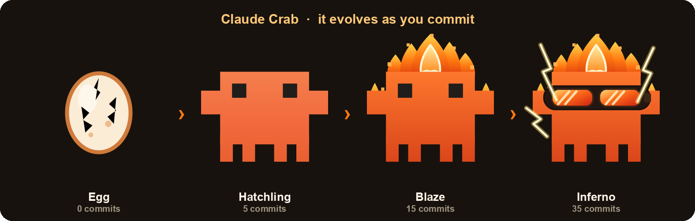

Claude Crab sits on your desktop and evolves as you commit, from an egg to a fiery crab. It reads your commit count on your own machine or from your GitHub account. That is the whole app.
Free and open source · macOS and Windows · nothing leaves your device
Installers are unsigned for now. On macOS, right-click the app and choose Open. On Windows, choose More info then Run anyway.

Choose one the first time you open the app. Either way your data stays on your machine.
Sign in with a short device code. No password, and no token to paste. It counts the commits you push to GitHub, private repos included, and keeps the sign-in token encrypted on your machine.
No sign in and no network. It scans the git repos on your machine and counts commits by your email, including work you have not pushed anywhere yet.
Your crab moves up a stage as your commit count grows, and you set the thresholds.
Claude Crab has no backend. In Local mode it makes no network requests at all. In GitHub mode it talks only to GitHub, to read your own commit counts. Nothing is uploaded and nothing is sold.